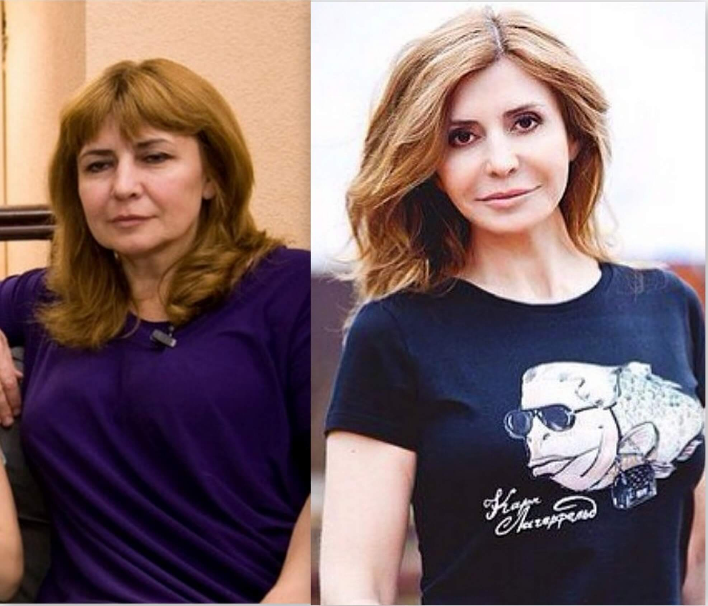
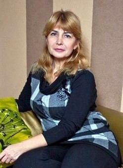
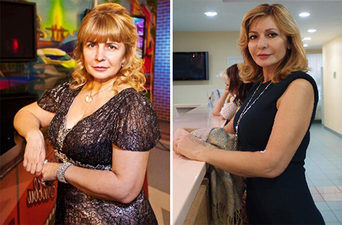
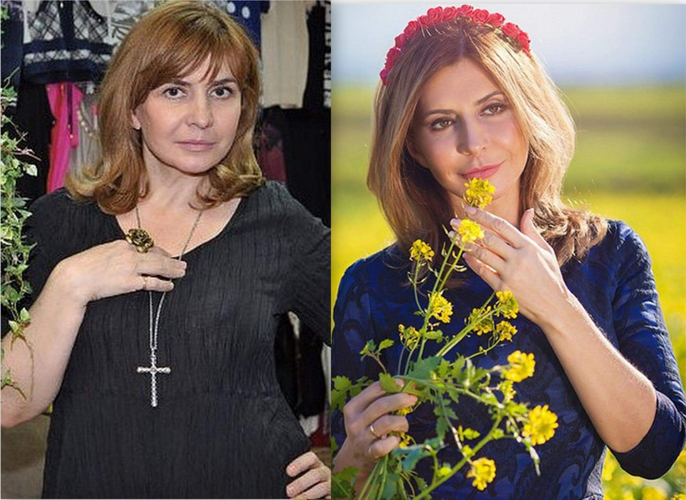
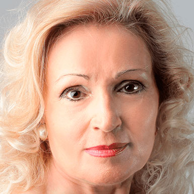
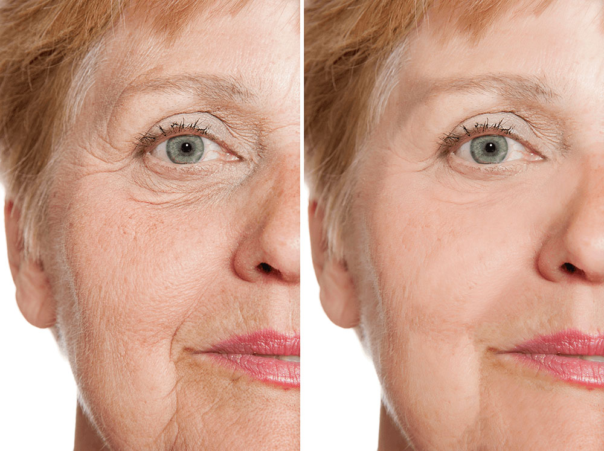
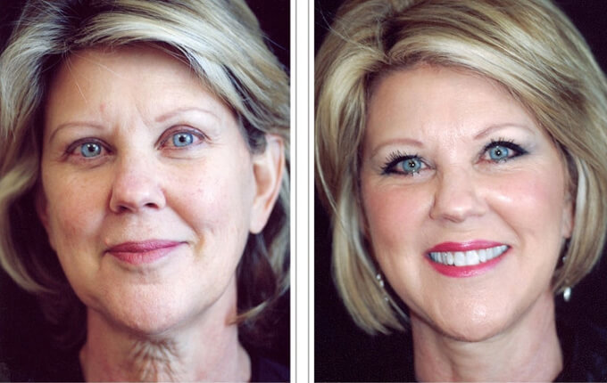
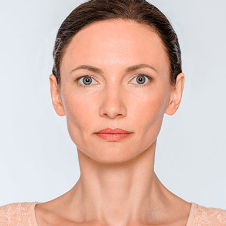

Bez ķirurģijas un injekcijām izskatīties kā 35gadīgai, kad tevi ir 51 - tas ir iespējams!Vai zināji, ka ar olīveļļas palīdzību 61 dienas laikā vari izskatīties 17 gadus jaunāka? Labdien, dārgie lasītāji! Mēs turpinām mūsu iknedēļas sleju "Vecums nav šķērslis skaistumam", kurā varat dalīties ar mums savās slepenajās metodēs ādas atjaunošanai. Šodien mēs atklāsim Miras noslēpumu, kas izraisīja pamatīgu apjukumu sociālajos tīklos, un ir viens no apspriestākajiem skaistuma forumos.  Stāstam ir skumjš sākums - pēc 25 gadu laulības Miras vīrs viņu pameta ar vārdiem, ka viņa ir veca. "Astoņus mēnešus es slīgu depresijā, nepārtraukti raudāju un pilnībā aizmirsu rūpēties par sevi. Loki un maisiņi zem acīm kļuva lielāki, seja sažuva un krunkas kļuva dziļākas. Man bija 49, un nākotnē redzēju tikai vientulību un vecumu," atceras Mira. Katru reizi mēs brīnāmies par mūsu varoņu neticamo izturību. Vai jūs domājat, ka Mira atkāpās, lai samierinātos ar vecumu. Absolūti nē! Viņa bija nolēmusi, ka atgūs skaistumu par katru cenu. "Es uzaugu laikmetā, kad nebija procedūru ar botoksu, plastiskās ķirurģijas vai citu līdzekļu. Tajā laikā pieaugušas sievietes izskatījās lieliski arī bez visiem šiem jauninājumiem. Es biju pārliecināta, ka ir veids, kā atgūt jaunību bez šīm bīstamajām un dārgajām procedūrām," teic Mira. 5 mēnešu laikā viņa izmēģināja visu: pīlingus, maskas, losjonus, serumus, vingrinājumus un masāžas. Taču tam visam bija praktiski nemanāms efekts, vai vispār nekāda. Mira vērsās pie dermatologa, taču viņai nebija, ar ko samaksāt par piedāvāto procedūru. Biju izmisumā, ka nekas nepalīdz. Ik reizi, izmēģinot jaunu metodi, biju gatava padoties, taču to nedarīju. Un tas bija tā vērts! Kādu reizi pļāpāju ar kādu ierēdni, un viņa piebilda, ka viņai esot 45 gadi, taču pēc izskata es nebūtu devusi vairāk kā 30. Viņa padalījās ar savu metodi, ko bija izmantojusi jau vairāk nekā 17 gadus ik dienu. Šīs maskas pamatā ir OLĪVEĻĻA, sakultas olas, malta kafija, medus un jogurts. Ik dienu es šo maisījumu uzsildīju un uz 4 stundām iemasēju sejā. Pēc 14 dienām biju šokēta par rezultātiem - grumbiņas kļuva nemanāmākas. Pēc 2 mēnešiem es izskatījos 10 gadus jaunāka! Pēc vēl viena mēneša grumbas ap acīm un smieklu krunciņas kļuva gandrīz neredzamas. Pēc daudziem gadiem es atkal izbaudīju savu skaistumu un atkal saņēmu komplimentus no cilvēkiem. Es biju tik laimīga! Maskai bija arī savi trūkumi - to ir jātur ilgu laiku uz sejas, turklāt to ir grūti nomazgāt. Ik dienu Mira veltīja 30 minūtes maisījuma sagatavošanai, noturēja to 5 stundas uz sejas, un vēl stunda bija nepieciešama tās nomazgāšanai. Taču skaistums, kā mēdz teikt, prasa upurus. Arī mana meita izmēģināja masku, taču viņai pietrūka pacietības tai veltīt tik daudz laika ik dienu. Reiz viņa devās uz kūrortu, lai izbaudītu pretnovecošanas kursu. Tur viņa aprunājās par šo masku ar dermatologu, kurš apstiprināja, ka maskas sastāvdaļas atjauno pat novecojošu ādu. Viņš pastāstīja, ka esot krēms , kas satur tās pašas vielas, ko mana maska. Taču krēms ir krietni ērtāks - tev nepieciešams to uzklāt pirms gulētiešanas. Es patiešām lamājos, kad viņa atveda dažas bundžiņas ar no Izraēlas. Man šķita, ka dermatologs vienkārši pamudinājis viņu iztērēt naudu. Taču pēc kāda laika es pamanīju, ka viņas āda arī 31 gada vecumā ir gluda, bez krunkām, un tas pēc krēma lietošanas. Tāpēc nolēmu pamēģināt. Krēms bija vēl efektīvāks par masku - pēc 23 dienām visas krunciņas bija pazudušas un mana āda bija manāmi savilkusies. Tā bija uzvara! Tagad tā vietā, lai sēdētu mājās ar masku, es apmeklēju interesantus pasākumus un devos uz interesantām vietām. Es guvu vēl vairāk pielūdzēju nekā manā jaunībā! Diemžēl, šīs vēl nav laimīgās beigas - problēmas parādījās atkal. Viņa visus savus jaunības atgūšanas pūliņus bija aprakstījusi blogā, kuram bija vairāk nekā 500 tūkstošu lasītāju. Kad viņa uzrakstīja par viņa saņēma draudus un prasības izvākt informāciju par šo produktu. Plastikas ķirurģijas klīniku īpašnieki nebija sajūsmā, ka sievietes uzzina vienkāršāku un pieejamāku veidu, kā atgūt jaunību. Mirai nācās izdzēst savu blogu drošības vārdā. Pasauli pārvalda nauda, jo neticams skaits alkatīgu cilvēku vēlas visu iegūt sev. Esmu vāja sieviete, un es nevaru cīnīties ar sistēmu. Man ir žēl, ka man nācās izdzēst blogu, taču tajā pašā laikā jāatzīst, ka man nebūtu laika par to rūpēties: pirmkārt jau tāpēc, ka oficiālie pārstāvji no piedāvāja man darbu. Otrkārt, es apprecējos, līdz ar to visu savu brīvo laiku pavadu ar pasaulē labāko vīrieti. Esmu ļoti pateicīga ikvienam, kas lasīja manu blogu, atbalstīja un dalījās receptēs. Pateicoties jums visiem, es nesabruku, un beidzot esmu laimīga." - komentē mūsu varone. Šodien Mira turpina strādāt komandā, kas atbalsta , kas palīdzēja atgūt iepriekšējo jauneklīgo ādu 985 967 sievietēm visā pasaulē. Un šis skaits aug ik dienu.  Iespējams, tas ir ikviena cilvēka pienākums, uzlabot sevi un mudināt tā darīt arī pārējos. Pēc ilgas un sāpīgas izpētes mēs esam atraduši līdzekli, kas atjauno īsākajā iespējamā laikā. Tas ir . Līdz ar to, vai ir vērts tērēt milzīgas summas sāpīgajām botoksa injekcijām, bīstamām ķirurģiskām manipulācijām vai citiem dārgiem līdzekļiem? Ir pieejams un vienkāršs veids, kā panākt to pašu efektu. Viss atkarīgs no jums, dārgie. Ja vēlaties pasūtīt , spiediet uz pogas zemāk. Mēs atvadāmies līdz nākamajai nedēļai. Visu labāko, un atceraties, ka vissvarīgākais skaistums mīt jūsos. VISI KOMENTĀRI 
Anita Beidzot es atradu ! Reiz to saņēmu kā dzimšanas dienas dāvanu. Sāku to lietot un uzreiz iemīlēju. Grumbas samazinājās nedēļas laikā, āda kļuva gluda un pabarota. Kad meklēju veikalos šo krēmu, neizdevās atrast. Tagad pasūtīju trīs bundžiņas. Tas ir pārāk labs. Vai zinājāt, ka varat dabūt tikai no oficiālās mājaslapas? Es vienreiz nopirku veikalā savā pilsētā, un izrādījās, ka tas ir viltojums! Mira, tu esi malacis! Es dievinu tevi. Lasīju tavu blogu kopš pirmsākumiem. Man žēl, ka tas vairs nav pieejams. Piekrītu par 100%, skaistumkopšanas saloni pelna no mums uz dārgu līdzekļu rēķina. Ir arī līdzīgi, taču lētāki! Es un manas draudzenes lietojam jau ilgāku laiku. Esmu pārsteigta, ka tik maz cilvēku zināja par šo lielisko līdzekli. Biju šokā, kad pēc nedēļas maisiņi un tumšie loki zem acīm pilnībā pazuda. Te būs foto. Meitenes, tas ir brīnumains līdzeklis! Kad krēms vēl nebija pārdošanā, es biju viena no 100 brīvprātīgajiem, kas piekrita to testēt. Rezultāti ir satriecoši! -15 gadi tikai 21 dienā... Es pamēģināju šo masku ar olīveļļu, bet man nebija pacietības to darīt katru dienu un turēt 4 stundas. Pasūtīšu lai pamēģinātu. 
Marja Sveikas, meitenes! Es strādāju par kosmētiķi 27 gadus. Man ir jāatzīst, ka lielākoties kosmētikas klīnikas tiešām klusē par pieejamām ādas atjaunošanas metodēm tieši naudas dēļ. satur visus elementus, kas nepieciešami pieaugšā ādai: kolagēnu, hialuronskābi, kā arī citus elementus. Šo elementu kombinācija palīdzēs paildzināt jaunību vairākus gadus. Es iesaku! |


Eīna
Jūsu stāsts iedvesmo! Mira, tu izskaties lieliski! Es pasūtīju krēmu. Gaidu, kad to saņemšu.